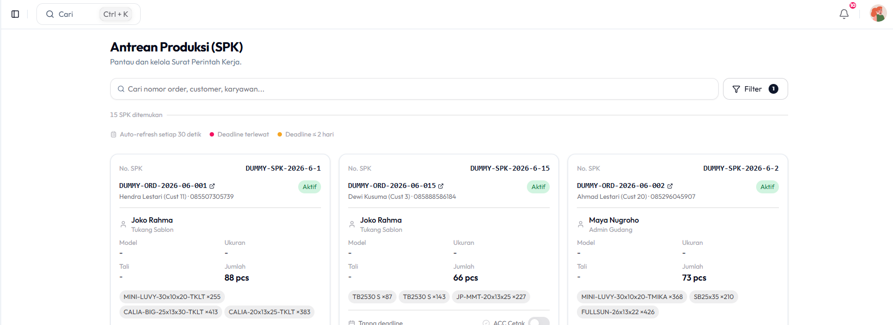

Pengelolaan operasional CV. Haqi Koleksi Daren Jepara sebelumnya masih tersebar di Google Sheet, Google Drive, dan penyimpanan NAS yang terpisah.
Kondisi ini membuat pesanan sulit dilacak, stok bahan baku tidak sinkron, dan file desain produksi tercecer di berbagai media.
Penelitian ini membangun sistem Point of Sale berbasis web yang menyatukan transaksi, produksi, inventori, desain, dan keuangan dalam satu platform terpusat.
Dikembangkan dengan model Waterfall, memakai Next.js sebagai framework full-stack dan MySQL sebagai basis data.
Prototipe sistem POS web yang mengintegrasikan lima modul operasional: pesanan, produksi, inventori, desain, dan keuangan.

Sistem POS berbasis web berhasil dibangun dan diterapkan di CV. Haqi Koleksi, menyatukan modul pesanan, produksi, inventori, desain, dan keuangan dalam satu platform.
Pengujian Black Box pada 15 skenario kritis mencapai keberhasilan 100%, sementara UAT memperoleh indeks penerimaan 86,87% berkategori sangat baik.
Modul keuangan masih memerlukan penyempurnaan alur akuntansi baku pada pengembangan berikutnya.